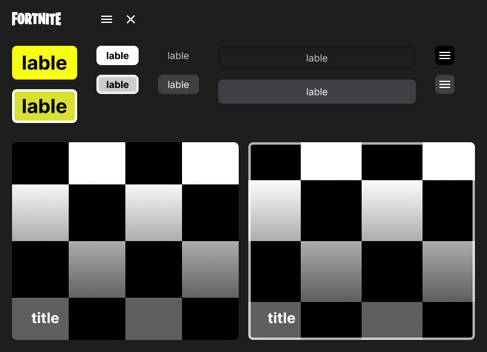

Sobre
O case em questão trata-se de uma aplicação desenvolvida como projeto final do
curso de UI/UX Design da
Coderhouse. O projeto visa criar uma experiência de usuário envolvente e funcional para promover
a
conscientização ambiental e incentivar práticas sustentáveis na gestão de resíduos.
Etapas do projeto
A metodologia Double Diamond foi escolhida como a bússola orientadora que
direcionou e enriqueceu a nossa
jornada. Essa abordagem, amplamente reconhecida e eficaz, se mostrou instrumental para
aprofundar a
compreensão das necessidades dos usuários e para gerar soluções criativas e impactantes.
Desk Research
O Desk Research foi essencial em nosso processo de pesquisa e desenvolvimento do
projeto. Por meio dessa abordagem, obtivemos informações precisas e atualizadas, reduzimos
custos e tempo, identificamos oportunidades e desafios, para fundamentar nossas propostas e
direcionar as pesquisas de maneira eficaz. A complementação dessa técnica com outras
metodologias de pesquisa foi crucial para garantir o êxito do projeto e permitiu tomar decisões
informadas, embasadas e estratégicas ao longo de todo o processo.
Aprendizado
A coleta seletiva teve um aumento de 17,4% em 2020. Durante a quarentena
desse ano, os resíduos da coleta seletiva cresceram 20%, comparados a 2019. Isso pode
estar ligado à maior adesão à reciclagem durante a pandemia, influenciada pela geração
de embalagens e refeições em casa.
De acordo com o Panorama dos Resíduos Sólidos no Brasil 2021 da Abrelpe,
cerca de 60,9% dos resíduos sólidos urbanos do Brasil foram destinados a aterros
sanitários em 2020.
O estudo "Fatores influentes na separação de resíduos sólidos domésticos:
estudo de caso em um município do sul do Brasil" examina barreiras e oportunidades para
a separação adequada, fornecendo insights valiosos para melhorar o comportamento de
separação de resíduos e promover práticas mais sustentáveis na gestão de resíduos
sólidos domésticos. Segundo ele algumas estratégias para promover práticas mais
sustentáveis na gestão de resíduos sólidos domésticos incluem:
- Educação e conscientização
- Infraestrutura adequada
- Facilidade de acesso
- Incentivos e recompensas
- Envolvimento comunitário
Exploração de teorias comportamentais e psicológicas podem ajudar a
compreender e influenciar os comportamentos relacionados à separação de resíduos.
Conclusão
A partir do estudo de caso e da análise de mercado foi possível entender
que as teorias apresentadas casam perfeitamente. Entendemos que a população leva como
incentivo para a separação de resíduos elementos como: gratificação financeira,
descontos, trocas ou algum benefício, mais do que estar em dia com o ambiente
sustentável.
Matriz CSD
Desk Research desempenhou um papel indispensável na jornada de pesquisa e
desenvolvimento do projeto. Através dessa abordagem, fomos capazes de criar uma Matriz CSD
sólida e bem embasada, a qual guiou as estratégias e decisões, possibilitando a identificação de
causas, soluções e desafios fundamentais no campo de estudo.
Cetezas
A Prefeitura de São Paulo criou um aplicativo que ajuda a população a
descartar o lixo de forma adequada.
Grande parte da população não tem acesso a coleta seletiva.
A separação de lixo aumentou em 2020.
Suposições
As pessoas precisam de algum incentivo (financeiro ou moral) para
separarem resíduos.
Pessoas que moram em condomínios separem mais resíduos do que pessoas
que moram em casa.
As pessoas não sabem dos programas de separação de resíduos de seus
municípios.
As pessoas não saibam dos impactos de não separarem resíduos
corretamente.
As pessoas não sabem a separação correta de resíduos ou não sabem
separar.
Faltam programas de incentivo.
Falta infraestrutura pública adequada.
Dúvidas
A população tem interesse em coleta seletiva?
As pessoas sabem como separar o lixo?
Quem separa resíduos, onde aprendeu?
As pessoas sabem como funciona a coleta seletiva?
A população teria um maior interesse se recebesse alguma bonificação?
As pessoas sabem o que fazer para descartar itens que não são jogados
no lixo comum?
Por que as pessoas não tem o hábito de separar resíduos?
Pesquisa qualitativa
Após a criação da Matriz CSD com base nas pesquisas realizadas durante a etapa de
Desk Research, conseguimos reconhecer a importância de aprofundar o entendimento dos temas
identificados através de uma pesquisa qualitativa. Com esse propósito, desenvolvemos um roteiro
de perguntas cuidadosamente elaborado para orientar as entrevistas e discussões com os
participantes da pesquisa.
Aprendizado
As pessoas (entrevistadas) sabem o que é coleta seletiva.
Não sabem como separar resíduos específicos.
Não usam lixeiras diferentes.
Acredita que a separação de resíduos é importante.
Algumas delas aprenderam a importância da separação de resíduos em
suas escolas.
Algumas delas não conhecem algum programas de coleta seletiva do seus
municípios.
Quem vive em condomínios acaba fazendo a separação de resíduos com
mais frequência.
Matriz de Análise dos resultados
Após a realização da pesquisa qualitativa, empreendemos o processo de compilar e
analisar os dados coletados a fim de obter insights valiosos e conclusões fundamentadas. A
pesquisa qualitativa nos proporcionou uma compreensão aprofundada dos temas identificados
através da Matriz CSD e permitiu capturar as perspectivas, experiências e opiniões dos
participantes de modo significativo.
Para sistematizar e organizar as informações, foi desenvolvida uma Matriz de Análise de
Resultados. Essa matriz foi cuidadosamente elaborada para refletir os elementos-chave da
pesquisa, permitindo-nos visualizar e comparar as respostas obtidas durante as entrevistas e
grupos de discussão.
Fatos
As pessoas que vivem em condomínios acabam fazendo a separação de
resíduos com mais frequência, por conta do incentivo do próprio condomínio
comparadas as pessoas que vivem em casas.
As pessoas não foram ensinadas sobre impactos e como separar resíduos,
ou não se lembram de onde aprenderam.
As pessoas não tem visibilidade de programas de incentivo a separação
de resíduos.
O sistema educaional pode educar as pessoas sobre a importantia da
cometa seletiva.
Entendem que a separação facilita o processo de descarte.
As pessoas não têm certeza do que acontece com o lixo.
As pessoas tendem a se preocupar com a separação.
Duvidas sobre a cadeia de coleta.
Duvidas sobre o destino dos resíduos.
Insights
Oportunidade de solução educativa: as pessoas tem inseguranças
quanto a separação de certos resíduos, por exemplo: embalagens plásticas com partes
metalizadas.
Oportunidade de solução em conjunto: as pessoas se sentem mais
motivadas a fazer a separação de resíduos quando pessoas próximas também fazem.
Oportunidade de solução informativa: as pessoas imaginam mas
não sabem de fato dos impactos da separação de resíduos na vida de outras pessoas e
do meio ambiente.
Oportunidade de solução com benefícios para o usuário:
benefícios ou bonificações incentivam a separação de resíduos, ex: receber adubo em
troca de algum descarte ou um clube de descontos.
Dor: nem todos os bairros/municípios tem coleta seletiva ou
pontos de coleta, o que pode ser um impeditivo para o uso da nossa solução.
Próximos passos
Estudar concorrência de acordo com as oportunidades de dores: quais
concorrentes entregam o que os usuários precisam hoje?
Avaliar a viabilidade das oportunidades levantadas.
Wireframe
A criação do Wireframe foi uma etapa crucial para garantir que o aplicativo fosse
projetado com base nas necessidades e expectativas dos usuários. Com os dados coletados em mãos,
pudemos traduzir as informações em soluções visuais de forma eficiente e estratégica.
Componentes
Ao criar o UI Kit, utilizamos o Moodboard como referência visual para definir a
paleta de cores, a tipografia,
as formas e os elementos gráficos. Isso garantiu que os aspectos estéticos do aplicativo
refletissem a essência
desejada, transmitindo emoções e mensagens de maneira coesa e agradável.
Integrando os princípios do Material Design 3, adicionamos uma camada de sofisticação ao
UI Kit. A utilização de elementos como elevações, ícones, botões, etc do Material Design 3
contribuiu para uma
experiência de usuário mais intuitiva e envolvente.

Prototipo de alta fidelidade
Após um meticuloso processo de pesquisa, análise e criação de diretrizes visuais,
foi dado um passo crucial na materialização do aplicativo: a criação do design de alta
fidelidade. Esse estágio representa a transformação das ideias abstratas em uma interface
concreta e interativa, onde todos os elementos visuais e interações ganham vida de forma
autêntica e envolvente.
O design de alta fidelidade foi criado com base nas diretrizes estabelecidas anteriormente, como
o Moodboard, o UI Kit e até mesmo o Material Design 3 como referência. Essas diretrizes
garantiram que cada pixel, cada cor e cada elemento da interface fossem pensados com cuidado e
intenção.
Prototipo de alta fidelidade
Com base no wireframe e com os componentes finalizados, foi possivel criar um
protótipo que consegue materializar todos conceitos idealizados pela a equipe. Nessa etapa
também foi necessário criar um protótipo mobile para facilitar o desenvolvimento responsivo.